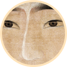
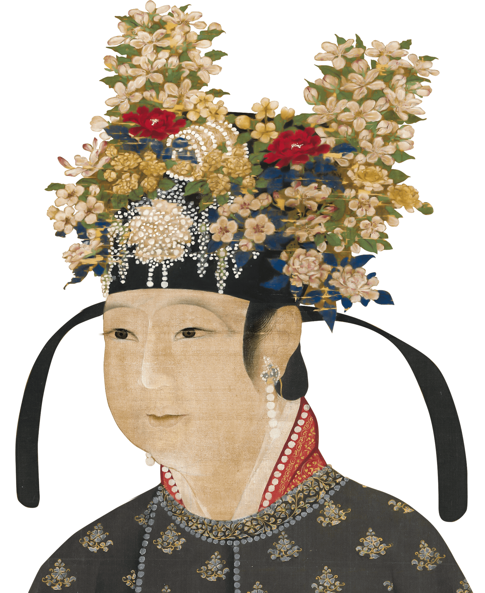
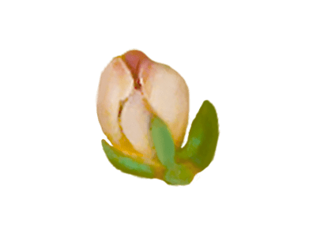
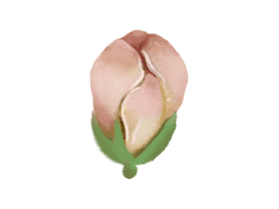
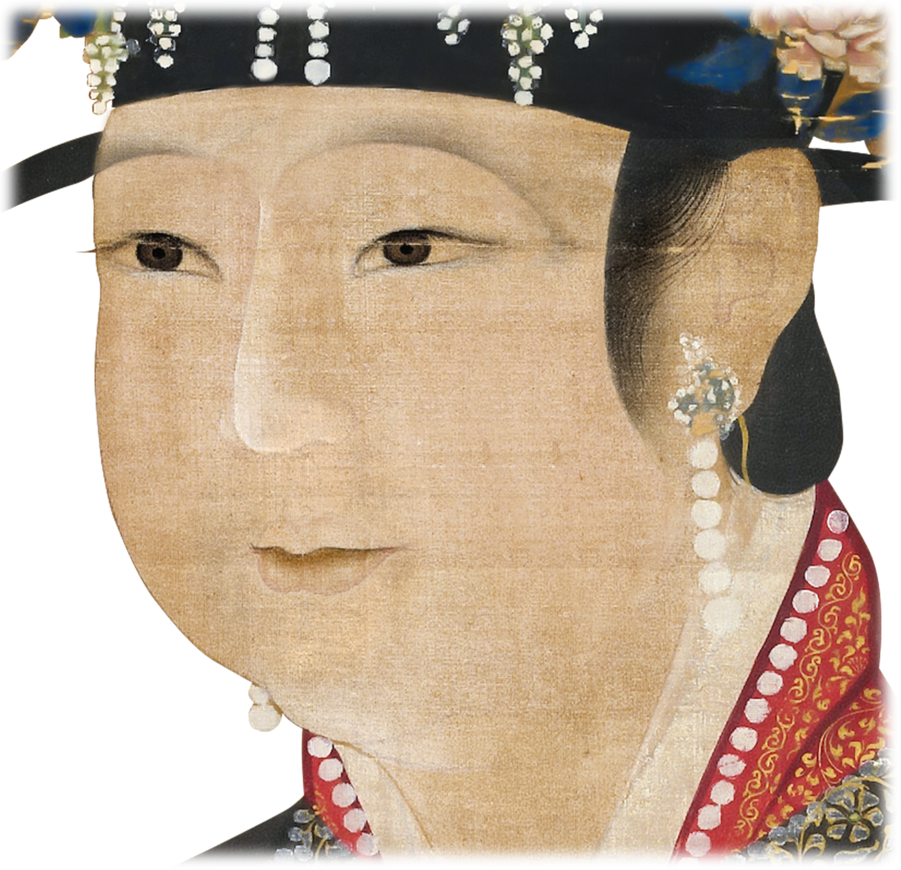
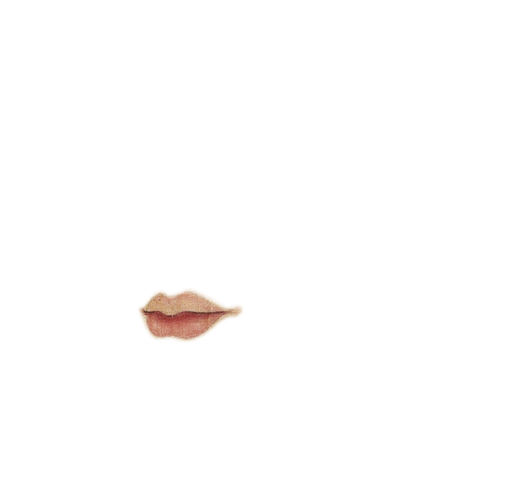

The levigator on the left powers the heavy revolving stone to grind the grain into flour.
The giant strainer on the right sieves the flour into finer powder ready for consumption. Thanks to this device, the rotation of the water-powered wheel is translated into linear motion that repeats itself back and forth, filtering bigger grains into smaller particles. Later literature such as Agro-Book by Wang Zhen of the Yuan Dynasty (1271-1368) would high tribute to such mechanical innovations for greater and faster output.






The bronze tripod, covered with verdigris, was placed on the exquisite stones and regarded as an ancient bronze ware.
Xuan aficionado who lives in the north, the champions league, center sits, is bei song himself.
The bronze tripod, covered with verdigris, was placed on the exquisite stones and regarded as an ancient bronze ware.
The person wearing the red official robe has a higher rank, holds the fan low head, calmly listens to the music with respect. Some scholars believe that the red robe was CAI Jing.
The bronze tripod, covered with verdigris, was placed on the exquisite stones and regarded as an ancient bronze ware. One of the broken branches of flowers in the tripod entered the water, and several small white flowers blossomed on the branches.
Wearing green official robes of lower rank, cage sleeve back, slightly forward, respectful manner, appreciate the music.
"Banishing tea" places equal emphasis on the collection of literati elegance and tea affairs, indicating that tea and literati life and tea culture have an inherent "elegance" word.
China experienced a progressive synthesis of Buddhism,
Taoism and Confucianism during the Song Dynasty. People opted for Chan(Zen) meditation
for enlightenment, practiced Taoist principles for healthy living and adopted Confucianism for social order.
Worshippers would entrust supernatural forces with their wishes
in return for votive offerings.
